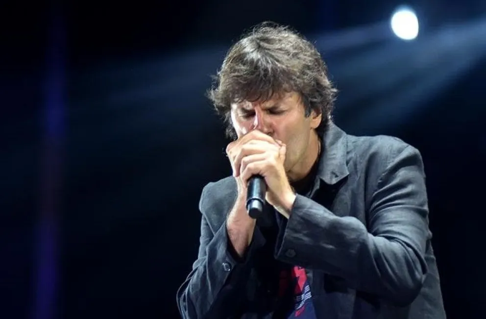

Andrés Ciro Martinéz
Andrés "Ciro" Martínez nació el 11 de enero de 1968 en Buenos Aires, Argentina; es un cantautor argentino, líder de su grupo Ciro y los Persas, formado en 2009, el vocalista de Los Piojos desde 1989, además de ser armonicista, letrista y guitarrista.